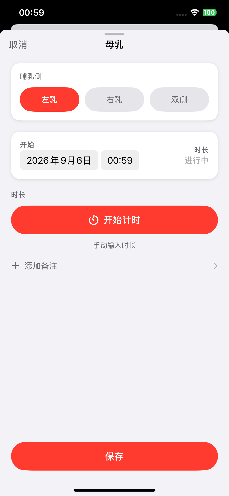
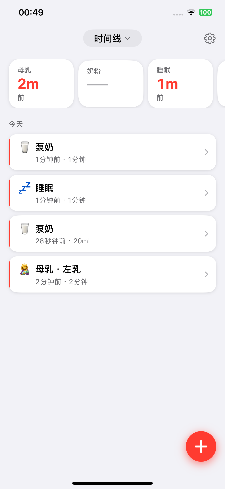
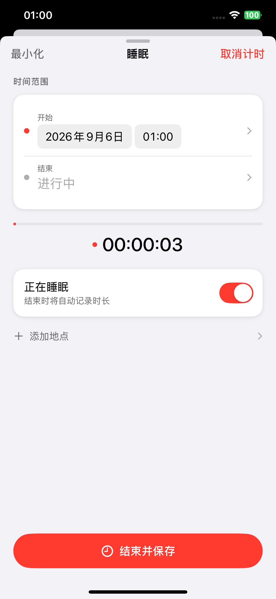
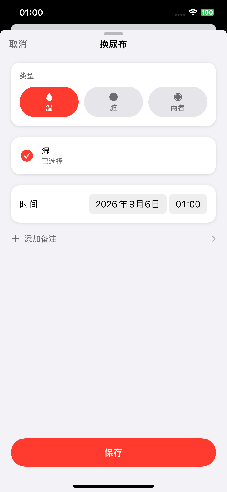

喂养
记录母乳、奶粉和泵奶。母乳可选择左右侧或双侧，并可计时或手动填写时长。
已上架 App Store · iPhone
Avolumi 初芽记将母乳、奶粉、睡眠、尿布、泵奶和成长记录放进同一条时间线。数据留在你的设备上，也可用你自己的 iCloud 私人数据库同步。

一张时间线，不是让你记得更多。
是让每一次已经发生的照护，都能在需要时被准确找回。
当前发布版本的真实界面

记录母乳、奶粉和泵奶。母乳可选择左右侧或双侧，并可计时或手动填写时长。

睡眠可以开始计时，也可以补录起止时间；正在进行的记录会清楚显示经过时长。

尿布可标记尿湿、便便或两者；也能记录身高和体重，并在时间线上回看每天的照护。
这里展示的是当前版本的原始产品截图；没有用生成图片或虚构界面替代。
数据属于你的家庭
初芽记没有账号、广告或第三方追踪 SDK。记录保存在你的设备上；登录 iCloud 后，可通过你的 iCloud 私人数据库同步到自己的设备。
阅读隐私政策先把话说清楚
可以记录母乳、奶粉、睡眠、尿布、泵奶，以及身高和体重。所有记录都会按时间整理在时间线上。
可以查看喂养、睡眠和尿布的统计趋势，也可以导出 CSV 数据。高级版还提供 PDF 记录汇总、喂养间隔提醒、每周小结，以及 JSON 备份与恢复。
不需要。基础记录可在设备本地使用；如使用同步，iCloud 会通过你自己的 Apple 账户与私人数据库处理数据。
可以。初芽记现已在 App Store 上线，支持 iPhone。点击“在 App Store 下载”即可查看最新版本、系统要求与购买选项。
欢迎前往支持页联系我们。尤其想知道：哪一步让你多想了一秒？